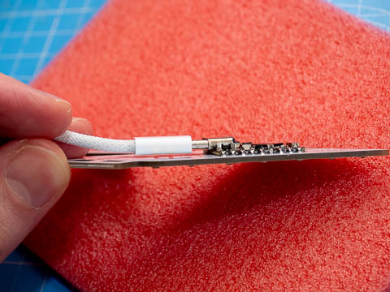
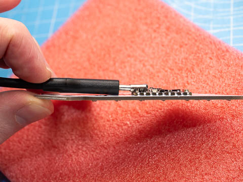
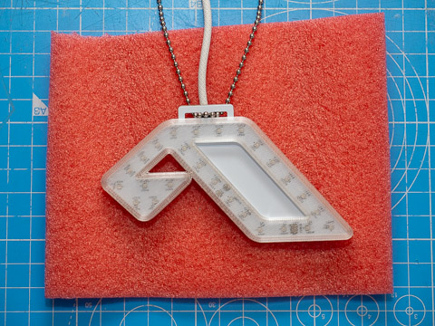
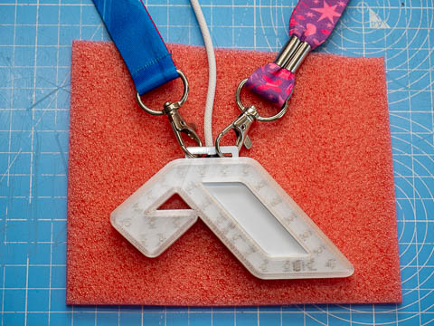

I fell in love with the glowing Anjuna sign suspended above the decks at Printworks back in 2021 & knew I needed to make my own.
That led to the first AnjunaGlow project, but I soon realised that if I wanted to make more than just a handful to share it had to be smaller, cheaper & easier to build... hence AnjunaGlow Mini!
If you have any questions, feedback or just want to send me a photo, please don't hesitate to reach out! You can mail me or find me on the official Anjuna Discord with the user ID cjdavies
AnjunaGlow Mini should run from any source of USB power, including direct from many USB C smartphones.
Any USB phone charger, powerbank or a spare USB socket on a computer/laptop/TV, no matter how old, should work with no problems.
You can expect long run times on even a modestly sized powerbank. The maximum consumption is <250mA, which means it will run for >24 hours from a 5000mAh powerbank.
If you want to change the cable (for example to a longer one, or to one with a USB A connector on the other end) please be careful.
You must use a cable with a slim connector!


When you connect AnjunaGlow Mini to a USB power source, a hotspot called AnjunaGlow will appear. The default password is above&beyond
If your phone/tablet/computer warns you that the network doesn't provide an Internet connection, tell it to 'Use Without Internet' or similar.
Once you connect you should automatically be redirected, like when you connect to free WiFi at a hotel or airport. If this doesn’t happen, open your browser & go to the address wled.me or 4.3.2.1
When you see the welcome page, the bottom button [TO THE CONTROLS!] will take you straight to the WLED controls so you can start trying things out! Try different effects, apply different color palettes & save combinations you like as presets.
If you want to, you can connect AnjunaGlow Mini to your home WiFi network. This means that when you are at home, you can access the controls without having to disconnect from your home WiFi & reconnect to the AnjunaGlow Mini hotspot.
From the welcome page (see Connect via WiFi hostpot section) click/tap [WIFI SETTINGS] or if you are already at the controls click/tap [Config] at the top & then [WiFi Setup].
On the WiFi setup page
You should now be able to access the sign from any device on your home WiFi network by going to the address you took note of in step 4.
If you use a home automation system like Home Assistant, you can also now integrate AnjunaGlow Mini with it.
When you connect AnjunaGlow Mini to power, it will automatically start the AnjunaGlow hotspot with the password above&beyond if it can't connect to your home WiFi.
So if you type the password to your home WiFi wrong, or take AnjunaGlow Mini away from your home, the AnjunaGlow hotspot will reappear.
The holes at the top can be used to attach ball chain, lanyards, zip ties, etc.
The USB cable can also be used to hang the device, as long as it has been zip tied down.


This was one of the biggest features requested from people who bought the original AnjunaGlow, so I managed to squeeze in a tiny ICS-43434 I2S MEMS microphone. But it does have limitations.
Due to manufacturing constraints, the opening for the microphone is on the back of the device (it is circled & labeled 'mic'). If the device brushes against your bag, clothing, etc. the mic will pick this up.
WLED uses Autonomous Gain Control (AGC) to automatically adjust the sensitivity of the sound reactive feature. However the microphone & the AGC reach their limit in very noisy environments. In club or festival environments, where sound levels are consistently very loud with limited crest factor, sound reactive effects will constantly trigger with little variation.
Sound reactive effects work better at home than at the club.
While the back of the device has been coated with a protective acrylic conformal coating (Electrolube HPA200H), it should still be treated with some care.
It is not waterproof & you should avoid attaching/hanging it anywhere that it will rub against exposed metal (like zippers).
AnjunaGlow Mini uses the MoonModules fork of WLED.
The WLED project is very powerful & offers extensive customization, but you can render your AnjunaGlow Mini non-functional if you alter settings without understanding what they do!
If you do something that makes your device non-functional, you can restore the default configuration & the default presets using the files below. Go to Config, then Security & Updates, scroll down to Backup & Restore, then select & upload the correct file in the corect place.
If you can't access the device whatsoever over WiFi, get in touch & I'll try to help you recover it remotely.
{kind=link}
{kind=link}
{kind=link}
{kind=link}